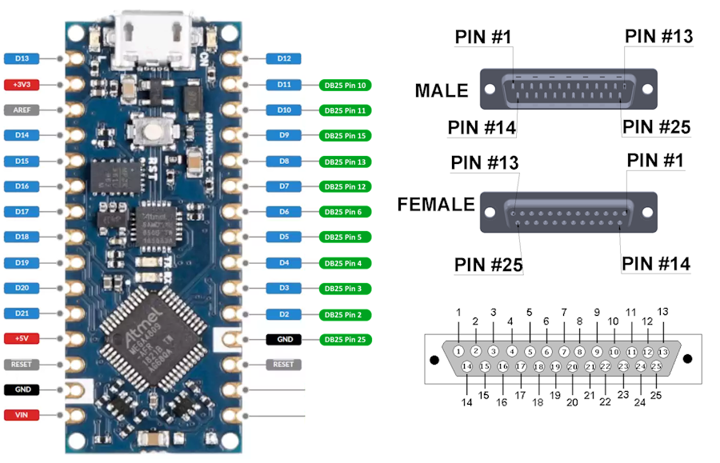

Portfolio Manager is an application for interfacing an Atari Portfolio vintage portable computer with your desktop PC. It works together with an Arduino to connect the Portfolio Parallel Interface Adapter to a USB port on your computer. With this hardware, Portfolio Manger supports the internal file transfer protocol of the Portfolio.
Requirements
To use this software you will need the following:
- An Atari Portfolio
- An Atari Parallel Interface Adapter
- An Arduino (Arduino Nano)
- A DB25 breakout board
- A PC running Windows
Features
Support for all built-in Portfolio file transfer server features:
- Sending files to Portfolio
- Receiving files from Portfolio
- Listing files on the Portfolio
Building the Project
This project consists of two parts, the Arduino Firmware that drives the connections to the Portfolio over the parallel port and the PofoManager desktop application that communicates with the Arduino over USB.
Building the Arduino Firmware
The Arduino firmware is located in the Arduino directory of the project. This can be built with the Arduino IDE and installed directly onto an Arduino. For this project, I've chosen an Arduino Nano but most models of Arduino should work without issue. You can edit the Porfolio.ino file to change the pin mapping if necessary.
Building PofoManager
The desktop component is written in C# for .NET 6.0. It can be compiled by the community (free) edition of Visual Studio 2022. Simply open the main solution file in the PofoManager directory of the project and select Build Solution.
Arduino Connection Diagram

For compatibiltiy with the Atari Portfolio file transfer server it is only necessary to connect to pins 2, 3, 12, 13, and 25 on the DB25 connector.
| Arduino Pin | DB25 Pin |
|---|---|
| 2 | 2 |
| 3 | 3 |
| 4 | 4 |
| 5 | 5 |
| 6 | 6 |
| 7 | 12 |
| 8 | 13 |
| 9 | 15 |
| 10 | 11 |
| 11 | 10 |
| GND | 25 |
Getting Help
You can get help with this application by using the Issues tab in this project.